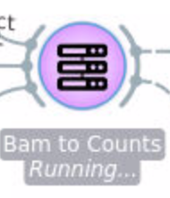
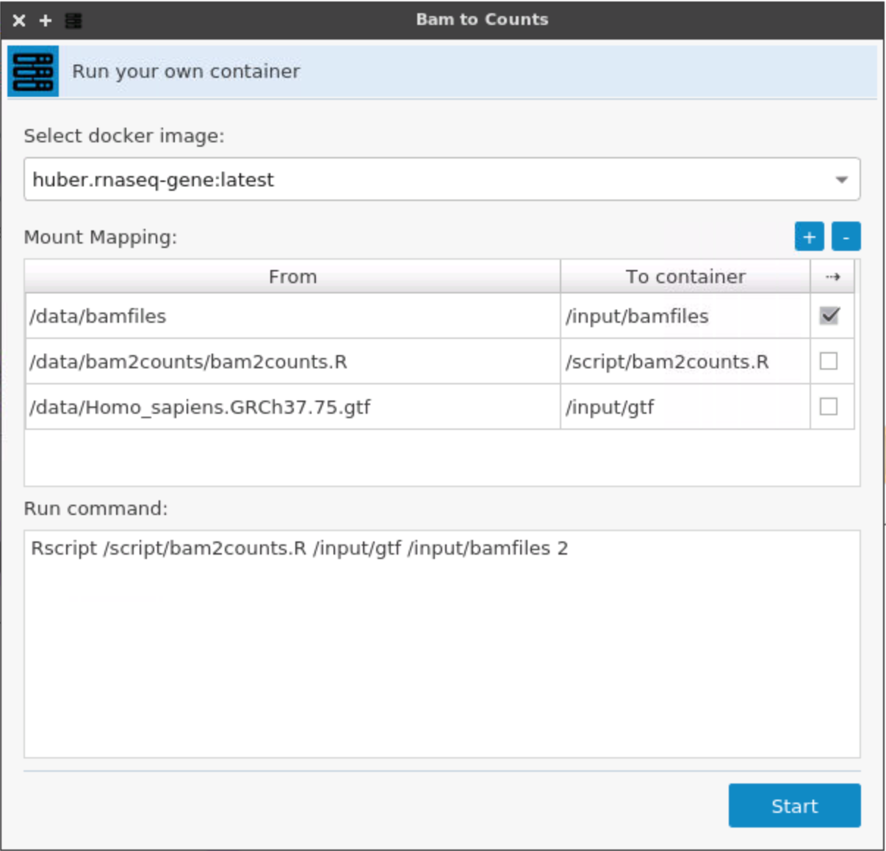

BioDepot-Workflow-builder (Bwb)¶
MANUAL¶


Bioinformatics Group University of Washington Tacoma
GENERAL INFORMATION¶
The BioDepot-workflow-builder (Bwb) can be used to build bioinformatics workflows by combining interchangeable and encapsulated widgets, allowing researchers to easily implement and test new algorithms and observe how the outputs differ. Widgets call Docker containers to execute software tools that could potentially be written in a different programming language, require different system configurations and/or developed by different research groups.
Docker Image : https://hub.docker.com/r/biodepot/bwb/
Source code : https://github.com/BioDepot/BioDepot-workflow-builder
Demo video : https://youtu.be/VY1peA4ITog .
Overview: Running Bwb¶
1\. Install Docker 2\. Start the container with Bwb by executing the following Docker command by typing into a window (Linux) or on the Docker command line (Windows/macOs) ```bash docker run --rm -p 6080:6080 \ -v ~/Desktop/:/data \ -v /var/run/docker.sock:/var/run/docker.sock \ biodepot/bwb ``` 3\. Open a browser and connect to the Bwb container by typing the following url in the address bar of your browser. In Linux the url is:For cloud instances and remote servers use the ip of the instance or remote server instead of localhost.
For Windows and Macs the url is http://192:168:99:100:6080
For Windows and Macs the IP may vary depending on your setup - instructions are here to find it)
4. To quit the container, right click inside the browser and choose the QUIT container option. Alternatively, you can also stop it by finding the container id and stopping the container. Quitting the browser just closes the viewport to the container - it does not stop the container.
Installing and starting Docker¶
Linux¶
1. Update your package manager index.
On Debian based distros such as Ubuntu the package manager is apt-get
sudo apt-get -y update
On Redhat based distros such as Fedora/Centos the package manager is dnf or yum on older systems
sudo dnf -y update
2. Install Docker. Ubuntu;
sudo apt-get -y install docker-engine
Fedora/Centos:
sudo dnf -y install docker
3. Start the Docker daemon.
sudo service docker start
4. Verify docker is installed correctly.
sudo docker run hello-world
The last command downloads a test image and runs it in a container. When the container runs, it prints an informational message. Then, it exits
For more information please refer to -
https://docs.docker.com/engine/installation/linux/ubuntulinux/
macOS¶
1. Download the Docker package - Docker for Mac 2. To install Docker: double-click Docker.dmg to open the installer, then drag Moby the whale to the Applications folder.

3. To start Docker: double-click Docker.app in the Applications folder. (In the example below, the Applications folder is in "grid" view mode.)

You will be asked to authorize Docker.app with your system password after you launch it. Privileged access is needed to install networking components and links to the Docker apps.The whale in the top status bar indicates that Docker is running, and accessible from a terminal.

Windows¶
1. To install Docker,
- download to the package - Docker for Windows
- go to folder where the installation file (Installer.exe) is saved and run (double-click) the installation file.
- click the installer link to download.
- follow the install wizard to accept the license, authorize the installer, and proceed with the install.
- when it completes, the installer reports it was successful:
- click the finish button to complete the installation.

2. To start Docker,
- search for Docker, select the app in the search results, and click it (or hit Return).

- when the whale in the status bar stays steady, Docker is up-and-running, and accessible from any terminal window.

- if the whale is hidden in the Notifications area, click the up arrow on the taskbar to show it. To learn more, see Docker Settings.
- If you just installed the app, you also get a popup success message with suggested next steps, and a link to this documentation.

On The Cloud¶
On the cloud, BwB can also be run on any cloud instance. Please refer to the Linux and Windows instructions to install Docker on the cloud instance.
Amazon AWS¶
1. Login to your console and create a new EC2 instance of ubuntu (Here we are using ubuntu you can choose operating system of your choice)
2. Select the configuration and click on "Review and Launch"
3. You will be prompted to associate a ssh key pair with the instance, you can use an existing key pair or create a new one. The key will be downloaded onto the computer which will be later used to ssh into the machine.

4. Once the instance is running select your instance and scroll right for security groups.
5. From "Actions" button select "Edit inbound rules"

6. Add a new http rule for port 6080 to access the GUI from the container

7. Copy the public dns of the instance

8. SSH into the instance by typing the following command into the terminal. (Type the commands in the directory where the ssh key of AWS instance was downloaded)
#(demo.pem is name of the key)
chmod 400 demo.pem `
ssh -i demo.pem ubuntu@public-dns-of-aws-instance
9. After you are logged use the instructions here to install Docker on Linux.
10. Configure the firewall using the instructions here http://docs.aws.amazon.com/AWSEC2/latest/UserGuide/authorizing-access-to-an-instance.html
Starting Bwb¶
After you have installed Docker on your machine, you are now ready to start your Bwb session to create and execute Docker container workflows. Bwb comes inside its own Docker container so it is first necessary to launch Docker as shown in the previous sections depending on which platform is being used.
Then run the following commands on command prompt / terminal. 1. Download the docker image containing Bwb.
docker pull biodepot/bwb:latest

2. Start the Bwb container
docker run --rm -p 6080:6080 -v ${PWD}:/data -v /var/run/docker.sock:/var/run/docker.sock biodepot/bwb
This command will launch a mini-webserver and start a windowing environment inside the container. The Bwb application is automatically launched upon running the container and appears as a maximized window on the Desktop inside the container. In the above command we have set the port to be 6080 and the current directory is mapped to the /data directory inside the container. However, all this is hidden from view until the user connects to the container using a browser.
To access the container open up a browser window and type in the IP of the container and port that it is listening to into the address bar. For a local installation using Linux, the IP of the container is localhost or 127.0.0.1 so the user would type localhost:6080 into the address bar of the browser. For a remote installation, the ip is the ip of the server. For Macs and Windows machines the local ip is usually 192:168:99:100 but if that does not work you can find the IP with the following command in a terminal if using Linux/MacOS or in the Docker window if using Windows.
docker ps
More information about finding Docker IP is available here: https://docs.docker.com/machine/reference/ip
Once connected. A window similar to Figure 1 should appear showing a maximized Bwb window. The interface is a standard windowing one implemented using fluxbox. The icons in the upper right hand corner are used to iconify (hide), minimize/maximize and close the window. Clicking on the area taskbar at the bottom can be used to toggle between windows or hide/show them. In the Bwb window itself is a large drawing canvas. Right-clicking on the canvas brings up the tool menu which has a list of all the available widgets. Widgets can also be dragged onto the canvas from the toolbox on the left. Bwb starts with the Bwb widget toolbox section open. The original Orange ML widgets for machine learning are also available. The different toolbox sections can be opened by clicking on the toolbox banner.
Note that the Bwb windowing system is inside the browser window. You still have access to whatever windowing system you are using on your host machine. If your browser closes or go to another url, nothing happens to Bwb - the browser merely provides a viewport to the Bwb container. Refreshing or reconnecting the browser to the container IP allows you to interact with Bwb again.

Figure 1: Maximized Bwb window

Figure 2: Multiple Bwb windows on Desktop
If we hide/iconify the window by clicking on the taskbar or clicking on the iconify button in the upper right hand corner of the window, we see the Desktop itself as shown in figure 2. Right clicking on the Desktop brings up a menu of available applications and the option to QUIT the container. Unlike closing the browser window, this command will actually kill the webserver resulting in the container being stopped. The menu also gives the option of opening another Bwb instance or a terminal. Multiple applications can be launched at same time - and the user even has the option of using different workspaces (up to 4) to quickly cycle through different windows.
WIDGETS¶
Using widgets¶

Figure 3: Different types of widgets
The widget is the main unit of the workflow. Available widgets are available in the toolbox on the left hand side of the Bwb window. Widgets can specify input, output or software modules. Widgets are dragged from the toolbox onto the canvas and connected to indicate the flow of data. the output of a widget becomes the input of the next connected widget. In this way an analytical pipeline consisting of different modules can transform input data into the final output results. Many of the software widgets utilize Docker containers that require docker engine. When widgets that are using Docker containers are used, the container will be automatically downloaded from DockerHub if it is not available locally.
Detailed description of individual widgets¶
Custom container widget¶
This widget is designed to facilitate the task of importing existing scripts and executables into Bwb without writing a full widget. Three elements are specified, a container with the required executables and dependencies, a set of mount points that point to where the input and output files will reside, and a starting command, for example to run a script. The example below shows how this can be used to run an R script that converts bamfiles to counts. Python and Perl scripts can be run changing the container to one that has Python and/or Perl installed. Stock containers for all the major scripting languages and packages such as Bioconductor are available on Docker Hub.


Load CSV¶
This widget plays a role as bridge between CSV file and the [Data Table] widget of Orange. It widget support two kind of sources (channels): a CSV file or a directory. If the source is a directory, the widget will scan that folder and list all CSV or TSV files. The CSV or TSV file will be loaded when user select them or specify the particular file name.


The above example showsthe output of Bam to Counts connected to the Directory of Load Counts Table. Once the procedure Bam to Counts finished, it will send /data/bamfiles to [Load CSV] widget, the [Load CSV] widget will scan this folder list all *.csv or *.tsv files.
WIDGET DEVELOPMENT GUIDE¶
1. Development environment¶
Biodepot-workflow-builder (Bwb) is based on Orange, here is Orange official website:
http://orange.biolab.si/, please take a look for Orange and understand what is Orange and the concept of widget.
The programming language for widget development is Python and the framework that used to create GUI is PyQT. Therefore some knowledge of Python and QuickTime is helpful for widget development. In addition, instead of native Docker commands, the python API is used to call Docker and a familiarity with DockerPy is also helpful.
The Bwb container itself has all the necessary dependencies for developing new widgets. However, it only comes installed with a basic editor and work needs to be saved and imported from the mounted user directory. In the future we may release a version of the the Bwb that is specialized for developing widgets. In the future we may release a version of the the Bwb that is specialized for developing widgets.
For now we recommend installing Python 3.5, pyQT5 and Orange locally to develop and test widgets. The code and instructions are at the Orange github https://github.com/biolab/orange3
Widget development overview¶
A widget consists of a python script that defines the inputs/outputs, names, and supporting files such as icons along with the actual commands to be executed. In the case of Bwb, these are usually, docker commands that are accessed using the Python API (DockerPy).
Orange provides a very useful tutorial for developing a widget. http://orange-development.readthedocs.io/tutorial.html
Once a widget has been written or downloaded from an github or other repository it needs to be installed so that Orange3 can recognize it. For development and testing we do this locally.
1. Navigate to the widget folder where setup.py exists and install the widget by typing
pip3 install -e
We use parameter -e here to install the widget as develop mode so that the package just linked to Python environment rather than copied into site-packages.
2. Run Orange3
3. When the widget is ready for installation into Bwb, clone the github repository of Bwb (https://github.com/BioDepot/BioDepot-workflow-builder) and copy the widget into the Biodepot directory. Rebuild the container using the Dockerfile i.e.
(Run from the git directory)
docker build -t mybwb .
The new container can be run as before, except the name of the new image (in the example mybwb), is substituted for the stock image biodepot/bwb:latest
Using BwBase to develop widgets¶

There is considerable boilerplate code in developing a containerized widget. To minimize the amount of repetitive code that needs to be written, we provide the BwBase class. The schema for an instance of this class is shown above for a widget connected the OWBam2Counts widget. BwBase handles tasks related to calling the Docker API, such as pulling an image and starting a container. It also takes care of the directories when connected with other widgets (in the example above, the OWBam2Counts widget).
The key individual components of the class are:
Event_OnRunMessage:¶
Triggered by BwBase to indicate the status of docker container, for now, the possible values are: Running and Finished.
Event_OnRunFinished:¶
Triggered when the docker container was exited.
dockerRun(self, volumes = None, commands = None, environments = None)¶
volumes: dictionary that define the mapping between host and container
commands: list of commands, e.g. ["echo hello", "exit"]
environments: dictionary of environments variables.
setDirectories(self, key, path, ctrlLabel = None)¶
Store the path of directories.
key: the name of this path.
path: real full path.
ctrlLabel: optional, used to display the path on label.